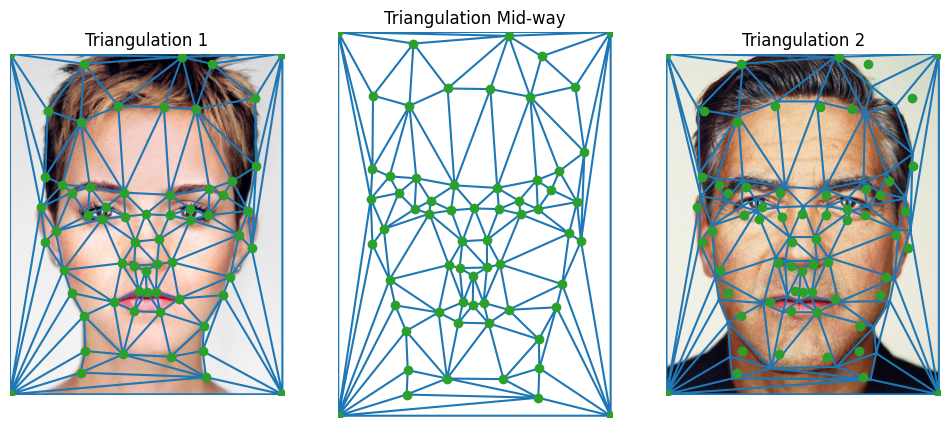
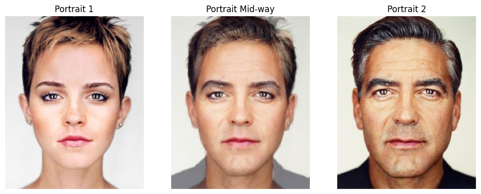
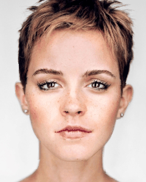
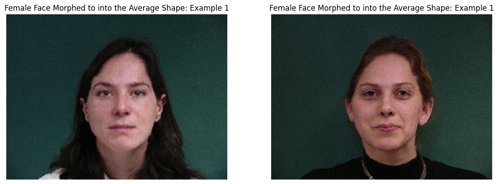
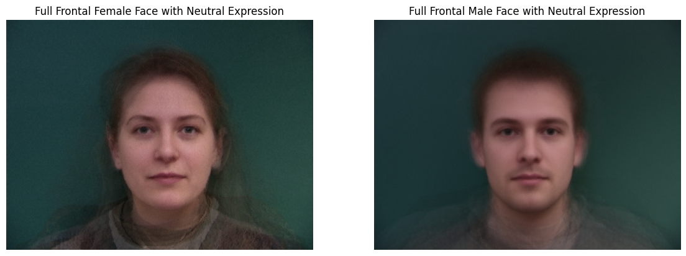
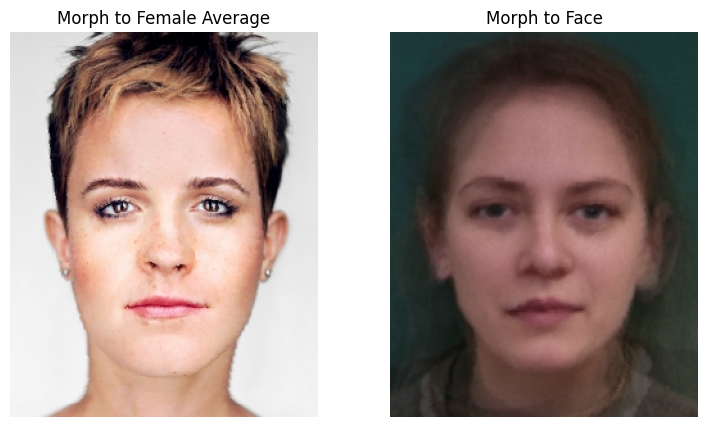
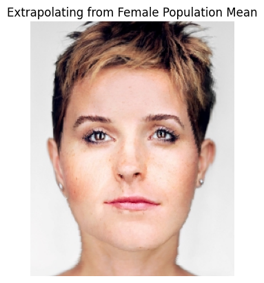
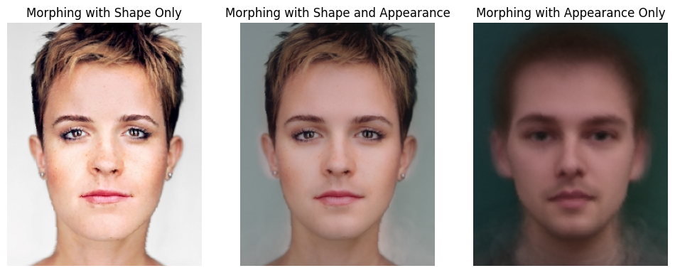

Using the labelling tool provided here to define pairs of corresponding points on the two images by hand. Then a Delaunay triangulation is created at a midway shape.
Here Martin Schoeller's photography of George Clooney and Emma Watson are used as examples.

To compute the mid-way face, following the steps: 1) computing the average shape, 2) warping both faces into that shape, and 3) averaging the colors together.
For each triangle defined by the facial landmarks, an affine transformation matrix is computed. skimage.draw.Polygon is used to generates a triangular mask for later inverse warping. scipy.interpolate.griddata is utilized to perform interpolation of pixel values within the triangular regions identified by the polygon function. Finally cross-dissolve the two warped images.

The function morphed_im produces a warp between im1 and im2 using point correspondences defined in im1_pts and im2_pts and the triangulation structure tri. The parameters warp_frac and dissolve_frac control shape warping and cross-dissolve, respectively. For interpolation, both parameters lie in the range [0,1].
The full morph sequence is displayed in the gif, with 45 frames of animation at 30 fps:

Use the Danes dataset of annotated faces, with the keypoints already annotated on the data, the average face shape is computed as described in previous sections.
Then Morph each of the faces in the dataset into the average shape. Here are some examples.
 The average face of the male and female population is computed and displayed below: 1) face warped into the average geometry, and 2) the average face warped into the face's geometry.

Calculate the shape of caricature by the formula im + alpha*(mean - im), and then warped the face to the target.

Change gender of targeted face. Morphing the face to the average face of the male from last section. From the visualization, it could be seen that using both shape and appearance brings the better result.
